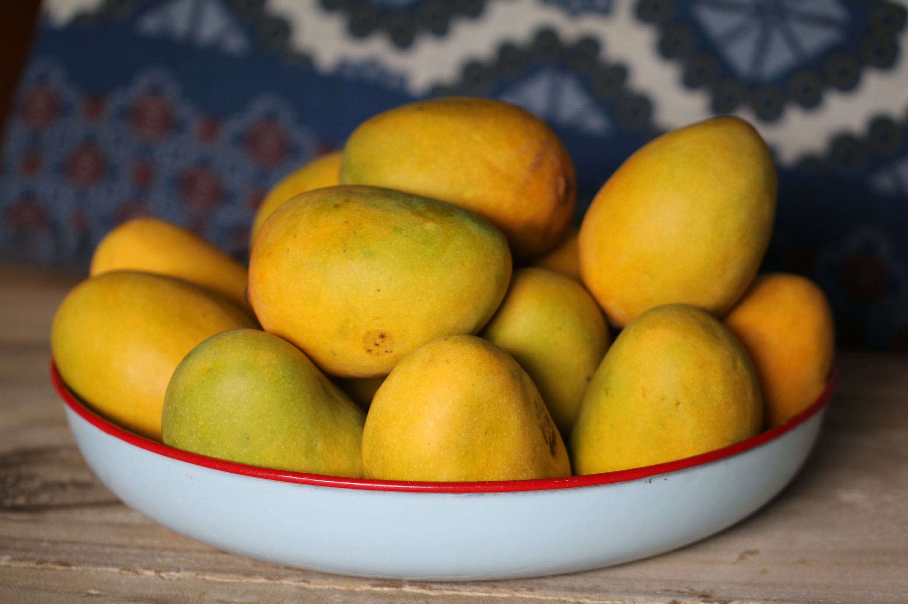

I grew up in many places in India. I was born in Hamirpur, a town enveloped by the Himalayan ranges. I changed schools nine times, moving across north and south India and traveling the east and west. My dad served in the military and moving was part of the family’s job.
The rest of my family is from Lucknow, India’s most populated state Uttar Pradesh’s capital city. The summers in the state reach as high as 44°C, about 111°F.
Winters are cold, with the lowest temperatures being in single digits. It never snows but the city does get its fair share of monsoon rains.
The other cities I grew up in were similar, with the exception of one southern city where it was pleasant all year-round, with temperatures mostly in the 25 to 30°C range, 77 to 86°F.
We Indians pride ourselves in the country’s seasonality. Traditions, food and festivals have all evolved around seasons. Diwali, the Hindu festival of lights, falls around October-November. When I was a pre-teen, my Diwali outfits involved at least a light sweater; now, only cotton clothes.
When I was growing up, I spent my summers eating musk-melons with cousins sitting on the floor and watching TV. Something I especially looked forward to was eating musk-melon seeds. Peeling the seeds, barely as big as a fingernail, was the ultimate test of my patience. But, the reward was worth it. And then of course, there were mangoes! Not the kind you get here in the US which are just sour, the ones in India are sweet as they can be. They’re called “the king of fruits” in India and no, I’m not making up the hype. India grows about 40% of the world’s mangoes with at least 1,000 varieties, according to a South China Morning Post article.
Towards the end of spring, you’d start seeing green, slightly sour, playful little mangoes. As the weather gets hotter, the mangoes turn more yellow and sweeter. In May and June, we’d eat a kind of mango called Safeda — big, bright and juicy!
I spent many winters soaking in the famous north Indian sun, sitting on the terrace helping my mom pluck, sort and separate winter greens. The conversations were filled with mom’s stories about her childhood spent doing the same. My mom often complained though, in confusion more than dismay, about how many of her winter-favorite vegetables were now available almost all year long. There was nothing special to look forward to, she’d lament.
North Indians look forward to carrot halwa in winters. The rich dessert soothes our chilling bones. We also look forward to saag, a leafy green curry made with mustard leaves, spinach and other regional greens.
Throughout my childhood, no matter what part of India I was in, summers meant mangoes and winters meant greens and carrot Halwa. Now, that’s no longer the case. Winter greens are mostly available year-round and mangoes, that once made you wait eagerly, have begun appearing in markets as early as mid-February!
For me, climate change presents itself most provokingly when it starts affecting the mundane. Reading about plastic waste ending up on the North and South poles doesn’t spring me to action. Realizing that my children will not eagerly wait for school summer vacation to really sit down and peel melon seeds and eat mangoes messily does. That their winters will not be spent soaking in the winter-special sun because the halwa now can be made in July too!